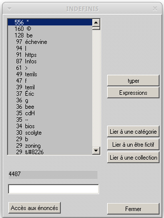

Le coeur de Prospéro
Contents
Le coeur de Prospéro#
Avant d’être un outil d’exploration de corpus, Prospéro est un langage de description de textes que l’on peut très bien appliquer sans recourir au logiciel. Par exemple, on fait déja du “Prospéro” si on lit le texte ci-dessous en se demandant quelles sont les entités, comment sont-elles qualifiées, dans quelles épreuves sont-elles engagées, dans quels mondes sont-elles prises, s’il y a des marqueurs.
Vendredi prochain, les États membres européens se prononceront probablement dans le cadre de la SCOPAFF sur l’interdiction ou non de trois matières actives présentes dans certains produits phytosanitaires en raison de leur impact éventuel sur la santé des abeilles. Les trois matières actives en question appartiennent à la famille des néonicotinoïdes et sont cruciales pour la culture de la betterave et de la chicorée en Belgique. En cas d’interdiction, la Confédération des Betteraviers Belges (CBB) demande certainement une exception pour ces deux cultures.
Certaines études souligneraient le danger de l’utilisation des néonicotinoïdes sur les cultures qui suivent les betteraves et avec lesquelles les abeilles peuvent potentiellement entrer en contact. D’autres études indiqueraient que ce risque est minime, voire inexistant. Quoiqu’il en soit, certains politiciens se sont prononcés pour une interdiction européenne des néonicotinoïdes.
Leur abandon dans l’enrobage des semences de betteraves sucrières et de chicorées pourrait avoir de graves conséquences pour les betteraviers belges. Les néonicotinoïdes sont actuellement la meilleure protection disponible contre la jaunisse ; une maladie très présente dans nos régions qui peut entraîner plus de 50 % de pertes de récolte en betteraves et en chicorées. Cette perte de revenus viendrait s’ajouter à des conditions de marché déjà difficiles, suite à la suppression des quotas et du prix minimum européens depuis septembre 2017.
Le rôle du logiciel est de rendre possible une telle lecture sur l’ensemble des textes d’un corpus. Pour cela, chaque utilisateur ou utilisatrice hérite d’un jeu de dictionnaires construit au fil des enquêtes passées. Ces dictionnaires sont le coeur du logiciel et leur enrichissement représente certainement l’essentiel du travail avec Prospéro. Dans la pratique, on distingue deux types de dictionnaires :
Les dictionnaires de base
Les dictionnaires des “concepts”
Les dictionnaires de base#
| Référent linguistique | Type de base | Exemples |
|---|---|---|
| Substantifs | Entités | États membres ; interdiction; matières ; abeilles ; etc. |
| Ajectifs | Qualités | européens ; actives |
| Adverbes | Marqueurs | probablement ; certainement |
| Verbes | Épreuves | prononceront ; appartiennent ; demande |
| Articles; prépositions ; pronoms | Mots-outils | les ; sur ; et |
| Nombres | 135 | |
| Prénoms |
Le logiciel Prospéro découpe les textes en énoncés. Une chaîne de caractère est considérée comme un énoncé lorsqu’elle se situe entre deux points. En revanche, les autres signes de ponctuations (“?”, “!”, “…”) ne sont pas utilisés comme élément de délimitation des énoncés. Ensuite, à partir des dictionnaires de base, le logiciel repère au sein de chaque énoncé les entités, les qualités, les marqueurs, les épreuves, les mots-outils, les nombres. Si nous reprenons l’exemple ci-dessus, le premier paragraphe contient trois énoncés :
Vendredi prochain,
les États membres européens seprononceront probablement dans le cadre de la SCOPAFFsur l’interdiction ou non de troismatières actives présentesdans certainsproduits phytosanitairesen raisonde leur impact éventuelsur la santé des abeilles .Les trois
matières actives en questionappartiennent à lafamille des néonicotinoïdes et sontcruciales pour laculture de labetterave et de lachicorée enBelgique .En cas d’interdiction, la
Confédération desBetteraviers Belges (CBB)demande certainement uneexception pour ces deuxcultures .
Il peut arriver que certains termes ne soient pas indexés dans les dictionnaires. Il sera alors considéré comme “indéfini”. La première façon d’enrichir ses dictionnaires, c’est donc de classer les indéfinis dans un des types de base. Ainsi, on ajoutera “SCOPAFF” et “néonicotinoïdes” à la liste des entités, et “phytosanitaires” à la liste des qualité.

On remarque aussi qu’il y a des “expressions” qu’il peut être intéressant d’indexer : “matières actives”, “produits phytosanitaires”, “santé des abeilles”, “Confédération des Betteraviers Belges”, “en raison”.
Vendredi prochain, les
États membres européens se prononceront probablement dans le cadre de la SCOPAFF sur l’interdiction ou non de troismatières actives présentes dans certainsproduits phytosanitaires en raison de leur impact éventuel sur lasanté des abeilles . Les troismatières actives en question appartiennent à lafamille des néonicotinoïdes et sont cruciales pour la culture de la betterave et de la chicorée en Belgique. En cas d’interdiction, laConfédération des Betteraviers Belges (CBB) demande certainement une exception pour ces deux cultures.
Dictionnaires de concepts#
La question des expressions, qui en un sens suppose déjà un travail interprétatif, permet d’enchaîner avec les dictionnaires des concepts. Ces dictionnaires reflètent en effet le travail d’analyse et les hypothèses du chercheur.
| Concepts | Définition | Types de base concernés |
|---|---|---|
| Être-fictif | Groupement des appellations d'une même entité. Identifié grâce au symbole "@" | Entités uniquement |
| Collection | Instance de groupement de type taxonomique | Entités uniquement |
| Catégorie | Regroupe des termes selon une logique sémantique | Entités, qualités, épreuves, marqueurs |
Les êtres-fictifs font écho à la notion d‘“actant” dans la sémantique structurale de Greimas [2002]. Ils regroupent les entités qui font référence à un même objet ou actant. Par exemple, on peut considérer que “bettraviers”, bettraviers belges”, “Confédération des Betteraviers Belges” font référence à l‘“être-fictif” BETTRAVIERS@. La constitution d’être-fictifs est particulièrement utile lorsqu’on travaille sur les partis et personnalités politiques.
PS@ : Parti socialiste, rue de Solférino, parti à la rose, etc.
LFI@ : LFI, La France Insoumise, le Parti de Jean-Luc Mélenchon
Les collections prennent la forme de taxonomies ou de répertoires. Elles se rapprochent de la notion de “monde” [Greimas, 2002]. Les collections rendent compte en effet des univers de référence des textes []. On pourra dire d’un article dans lequel la “collection” des organisations internationales est présente qu’il se réfère au monde des politiques internationales. Tandis que la présence d’une collection d’agences d’expertise comme l’EFSA, l’ANSES caractérisent souvent les textes qui parlent de controverses sanitaires ou environnementales. Dans Prospéro, les collections sont reconnaissables au fait que leurs noms sont écris en lettre capitale ponctués d’un astérique. Par exemple, la collection “ENNEMIS-DES-ABEILLES*” rassemble les éléments chimiques, physiques ou biologiques qui représentent un risque pour la santé des abeilles.
Enfin, les catégories permettent de typifier des registres discursifs : politiques, scientifiques, polémiques ou encore critiques. Par exemple, on fait l’hypothèse que des expressions comme “la nature”, “action pour l’environnement”, “alternatives énergétiques” ou “développement durable” connotent un “discours environnementalistes”. Tandis que “science”, “méthode”, “preuve”, “facteur” caractérisent une “rhétorique scientifique”. Par ailleurs, comme cela a été dit, il existe des :
catégories de qualités telle que la catégorie “discours critiques” qui regroupe des mots comme “anormal” ou “absurde”
catégories de marqueurs réunissant par exemple les adverbes qui expriment l’incertitude (“potentiellement”, “probablement”, “certainement”)
catégories d’épreuve comme “Accuser” (“accuse”, “a mis en cause”, “a admonesté”)
Exercice n°1 :#
Dans les deux textes disponibles ici ou là (un communiqué de presse de la Confédération des Betteraviers Belges et un communiqué de presse de Nature et Progrès Belgique)
Identifiez les différents types de base (entité, qualité, marqueur, épreuve)
Quelles expressions avez-vous repérées ? À quels types appartiennent-elle ?
Quels sont les êtres-fictifs que nous pouvons créer pour “faciliter” la compréhension des textes ? Même question pour les collections ?
Avez-vous identifié des ensembles d’entités, de qualité ou de marqueurs qui pourraient être regroupés au sein de catégorie ? Que nous apprennent-ils sur l’argumentation des acteurs ?
Références#
- Gre02(1,2)
Algirdas Julien Greimas. Sémantique structurale. Presses Universitaires de France, 3éd. edition, 2002. ISBN 978-2-13-052763-3. doi:10.3917/puf.grei.2002.01.